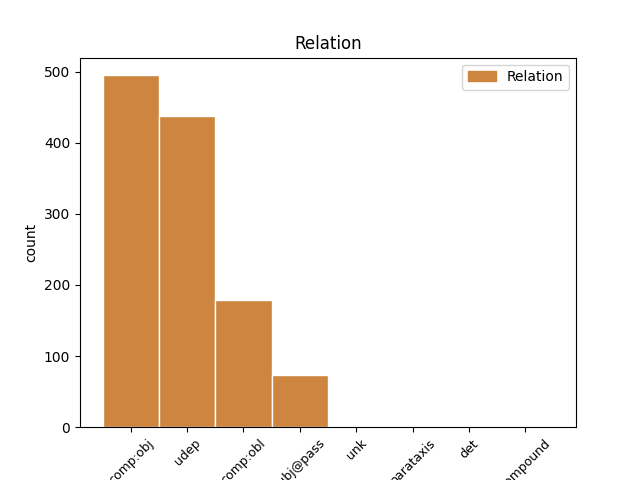
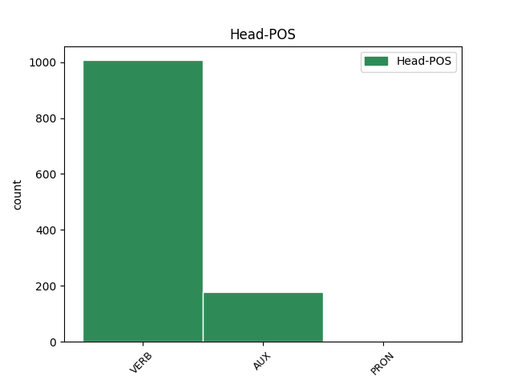
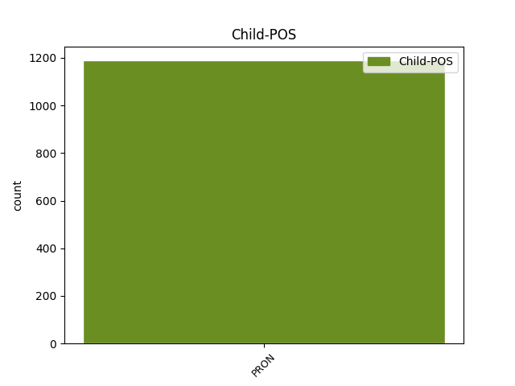

Distribution of features within this leaf



Agreement Rules sorted by frequency.
- When the dependent token is the direct object complements(comp:obj) of the head token, and the dependent token is PRON.
1 Tiek _ _ _ _ 0 _ _ _
2 norādīts _ _ _ _ 0 _ _ _
3 , _ _ _ _ 0 _ _ _
4 ka _ _ _ _ 0 _ _ _
5 Latvijā _ _ _ _ 0 _ _ _
6 bija _ _ _ _ 0 _ _ _
7 attīstīta _ _ _ _ 0 _ _ _
8 ekonomika _ _ _ _ 0 _ _ _
9 un _ _ _ _ 0 _ _ _
10 padomju _ _ _ _ 0 _ _ _
11 okupācija _ _ _ _ 0 _ _ _
12 to tas PRON pd3msan Case=Acc|Gender=Masc|Number=Sing|Person=3|PronType=Dem 13 comp:obj _ LvtbNodeId=a-z90-p317s1w12
13 sagrāva sagraut VERB vmnist130an Evident=Fh|Mood=Ind|Person=3|Polarity=Pos|Tense=Past|VerbForm=Fin|Voice=Act 0 _ _ _
14 . _ _ _ _ 0 _ _ _
1 Tai tas PRON pd3msln Case=Loc|Gender=Masc|Number=Sing|Person=3|PronType=Dem 7 udep _ LvtbNodeId=a-z87-p29s4w1
2 vismaz _ _ _ _ 0 _ _ _
3 jau _ _ _ _ 0 _ _ _
4 kopš _ _ _ _ 0 _ _ _
5 romiešu _ _ _ _ 0 _ _ _
6 tiesībām _ _ _ _ 0 _ _ _
7 ir būt AUX vcnipii30an Evident=Fh|Mood=Ind|Person=3|Polarity=Pos|Tense=Pres|VerbForm=Fin|Voice=Act 0 _ _ _
8 atzīts _ _ _ _ 0 _ _ _
9 arī _ _ _ _ 0 _ _ _
10 juridisks _ _ _ _ 0 _ _ _
11 aspekts _ _ _ _ 0 _ _ _
12 . _ _ _ _ 0 _ _ _
1 Ja _ _ _ _ 0 _ _ _
2 saņemtais _ _ _ _ 0 _ _ _
3 ziņojums _ _ _ _ 0 _ _ _
4 attiecas _ _ _ _ 0 _ _ _
5 uz _ _ _ _ 0 _ _ _
6 jau _ _ _ _ 0 _ _ _
7 strādājošu _ _ _ _ 0 _ _ _
8 procesa _ _ _ _ 0 _ _ _
9 verificēšanas _ _ _ _ 0 _ _ _
10 instanci _ _ _ _ 0 _ _ _
11 , _ _ _ _ 0 _ _ _
12 tas tas PRON pd3msnn Case=Nom|Gender=Masc|Number=Sing|Person=3|PronType=Dem 13 subj@pass _ LvtbNodeId=a-z98-p100s1w12
13 tiek tikt AUX vtnipi130an Evident=Fh|Mood=Ind|Person=3|Polarity=Pos|Tense=Pres|VerbForm=Fin|Voice=Act 0 _ _ _
14 " _ _ _ _ 0 _ _ _
15 nosūtīts _ _ _ _ 0 _ _ _
16 " _ _ _ _ 0 _ _ _
17 attiecīgajai _ _ _ _ 0 _ _ _
18 instancei _ _ _ _ 0 _ _ _
19 apstrādei _ _ _ _ 0 _ _ _
20 . _ _ _ _ 0 _ _ _
1 Tiek _ _ _ _ 0 _ _ _
2 uzsvērts _ _ _ _ 0 _ _ _
3 , _ _ _ _ 0 _ _ _
4 ka _ _ _ _ 0 _ _ _
5 vislielākie _ _ _ _ 0 _ _ _
6 stereotipu _ _ _ _ 0 _ _ _
7 draudi _ _ _ _ 0 _ _ _
8 rodami _ _ _ _ 0 _ _ _
9 nevis _ _ _ _ 0 _ _ _
10 tajos _ _ _ _ 0 _ _ _
11 ietvertajos _ _ _ _ 0 _ _ _
12 maldos _ _ _ _ 0 _ _ _
13 , _ _ _ _ 0 _ _ _
14 bet _ _ _ _ 0 _ _ _
15 gan _ _ _ _ 0 _ _ _
16 rīcībā _ _ _ _ 0 _ _ _
17 , _ _ _ _ 0 _ _ _
18 kas _ _ _ _ 0 _ _ _
19 tiem tas PRON pd3mpdn Case=Dat|Gender=Masc|Number=Plur|Person=3|PronType=Dem 20 comp:obl _ LvtbNodeId=a-z89-p104s4w19
20 seko sekot VERB vmnipi230an Evident=Fh|Mood=Ind|Person=3|Polarity=Pos|Tense=Pres|VerbForm=Fin|Voice=Act 0 _ _ _
21 . _ _ _ _ 0 _ _ _
1 Tas tas PRON pd3msnn Case=Nom|Gender=Masc|Number=Sing|Person=3|PronType=Dem 12 unk _ LvtbNodeId=a-p3762-p48s13w1|SpaceAfter=No
2 , _ _ _ _ 0 _ _ _
3 kurš _ _ _ _ 0 _ _ _
4 to _ _ _ _ 0 _ _ _
5 saņem _ _ _ _ 0 _ _ _
6 , _ _ _ _ 0 _ _ _
7 piemēram _ _ _ _ 0 _ _ _
8 , _ _ _ _ 0 _ _ _
9 Uldis _ _ _ _ 0 _ _ _
10 Bērziņš _ _ _ _ 0 _ _ _
11 , _ _ _ _ 0 _ _ _
12 tā tā PRON pd3fsnn Case=Nom|Gender=Fem|Number=Sing|Person=3|PronType=Dem 0 _ _ _
13 ir _ _ _ _ 0 _ _ _
14 ļoti _ _ _ _ 0 _ _ _
15 adekvāta _ _ _ _ 0 _ _ _
16 lieta _ _ _ _ 0 _ _ _
17 . _ _ _ _ 0 _ _ _
1 Nē _ _ _ _ 0 _ _ _
2 , _ _ _ _ 0 _ _ _
3 viņai _ _ _ _ 0 _ _ _
4 šis šis PRON pd3msnn Case=Nom|Gender=Masc|Number=Sing|Person=3|PronType=Dem 0 _ _ _
5 tas tas PRON pd3msnn Case=Nom|Gender=Masc|Number=Sing|Person=3|PronType=Dem 4 compound _ LvtbNodeId=a-s25-p14s8w5
6 padodas _ _ _ _ 0 _ _ _
7 , _ _ _ _ 0 _ _ _
8 bet _ _ _ _ 0 _ _ _
9 , _ _ _ _ 0 _ _ _
10 ja _ _ _ _ 0 _ _ _
11 viņa _ _ _ _ 0 _ _ _
12 gatavo _ _ _ _ 0 _ _ _
13 , _ _ _ _ 0 _ _ _
14 viņa _ _ _ _ 0 _ _ _
15 vienlaikus _ _ _ _ 0 _ _ _
16 runā _ _ _ _ 0 _ _ _
17 pa _ _ _ _ 0 _ _ _
18 tālruni _ _ _ _ 0 _ _ _
19 , _ _ _ _ 0 _ _ _
20 viņa _ _ _ _ 0 _ _ _
21 runā _ _ _ _ 0 _ _ _
22 ar _ _ _ _ 0 _ _ _
23 bērniem _ _ _ _ 0 _ _ _
24 , _ _ _ _ 0 _ _ _
25 viņa _ _ _ _ 0 _ _ _
26 krāso _ _ _ _ 0 _ _ _
27 griestus _ _ _ _ 0 _ _ _
28 , _ _ _ _ 0 _ _ _
29 un _ _ _ _ 0 _ _ _
30 taisa _ _ _ _ 0 _ _ _
31 atvērto _ _ _ _ 0 _ _ _
32 sirds _ _ _ _ 0 _ _ _
33 operāciju _ _ _ _ 0 _ _ _
34 . _ _ _ _ 0 _ _ _
Disagree Examples:
1 Jums jūs PRON pp20pdn Case=Dat|Number=Plur|Person=2|PronType=Prs 2 udep _ LvtbNodeId=a-c23-p13s3w1
2 patīk patikt VERB vmnipi130an Evident=Fh|Mood=Ind|Person=3|Polarity=Pos|Tense=Pres|VerbForm=Fin|Voice=Act 0 _ _ _
3 kārtība _ _ _ _ 0 _ _ _
4 ne _ _ _ _ 0 _ _ _
5 tikai _ _ _ _ 0 _ _ _
6 apkārt _ _ _ _ 0 _ _ _
7 , _ _ _ _ 0 _ _ _
8 bet _ _ _ _ 0 _ _ _
9 arī _ _ _ _ 0 _ _ _
10 domās _ _ _ _ 0 _ _ _
11 . _ _ _ _ 0 _ _ _
1 Jums jūs PRON pp20pdn Case=Dat|Number=Plur|Person=2|PronType=Prs 4 comp:obl _ LvtbNodeId=a-c23-p13s5w1
2 šad _ _ _ _ 0 _ _ _
3 tad _ _ _ _ 0 _ _ _
4 pārmet pārmest VERB vmnipt130an Evident=Fh|Mood=Ind|Person=3|Polarity=Pos|Tense=Pres|VerbForm=Fin|Voice=Act 0 _ _ _
5 pārlieku _ _ _ _ 0 _ _ _
6 piekasīgumu _ _ _ _ 0 _ _ _
7 , _ _ _ _ 0 _ _ _
8 taču _ _ _ _ 0 _ _ _
9 grūtos _ _ _ _ 0 _ _ _
10 brīžos _ _ _ _ 0 _ _ _
11 nekļūdīgi _ _ _ _ 0 _ _ _
12 atrod _ _ _ _ 0 _ _ _
13 ceļu _ _ _ _ 0 _ _ _
14 pie _ _ _ _ 0 _ _ _
15 jums _ _ _ _ 0 _ _ _
16 , _ _ _ _ 0 _ _ _
17 meklējot _ _ _ _ 0 _ _ _
18 palīdzību _ _ _ _ 0 _ _ _
19 . _ _ _ _ 0 _ _ _
1 Jums jūs PRON pp20pdn Case=Dat|Number=Plur|Person=2|PronType=Prs 2 udep _ LvtbNodeId=a-c23-p13s6w1
2 ir būt VERB vmnipii30an Evident=Fh|Mood=Ind|Person=3|Polarity=Pos|Tense=Pres|VerbForm=Fin|Voice=Act 0 _ _ _
3 vienlīdz _ _ _ _ 0 _ _ _
4 lielas _ _ _ _ 0 _ _ _
5 izredzes _ _ _ _ 0 _ _ _
6 gūt _ _ _ _ 0 _ _ _
7 ievērojamus _ _ _ _ 0 _ _ _
8 panākumus _ _ _ _ 0 _ _ _
9 gan _ _ _ _ 0 _ _ _
10 humanitārās _ _ _ _ 0 _ _ _
11 , _ _ _ _ 0 _ _ _
12 gan _ _ _ _ 0 _ _ _
13 tehniskās _ _ _ _ 0 _ _ _
14 zinātnēs _ _ _ _ 0 _ _ _
15 . _ _ _ _ 0 _ _ _
1 Seksā _ _ _ _ 0 _ _ _
2 jums jūs PRON pp20pdn Case=Dat|Number=Plur|Person=2|PronType=Prs 3 udep _ LvtbNodeId=a-c23-p13s7w2
3 pietrūkst pietrūkt VERB vmnipi130an Evident=Fh|Mood=Ind|Person=3|Polarity=Pos|Tense=Pres|VerbForm=Fin|Voice=Act 0 _ _ _
4 atbrīvotības _ _ _ _ 0 _ _ _
5 . _ _ _ _ 0 _ _ _
1 Jums jūs PRON pp20pdn Case=Dat|Number=Plur|Person=2|PronType=Prs 2 udep _ LvtbNodeId=a-c23-p13s8w1
2 nav būt AUX vcnipii30ay Evident=Fh|Mood=Ind|Person=3|Polarity=Neg|Tense=Pres|VerbForm=Fin|Voice=Act 0 _ _ _
3 sveša _ _ _ _ 0 _ _ _
4 vilšanās _ _ _ _ 0 _ _ _
5 , _ _ _ _ 0 _ _ _
6 taču _ _ _ _ 0 _ _ _
7 spējat _ _ _ _ 0 _ _ _
8 par _ _ _ _ 0 _ _ _
9 to _ _ _ _ 0 _ _ _
10 ātri _ _ _ _ 0 _ _ _
11 aizmirst _ _ _ _ 0 _ _ _
12 . _ _ _ _ 0 _ _ _